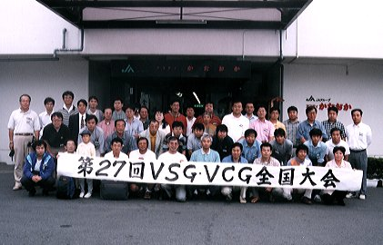
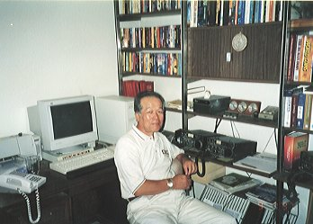

このリポートは1エリアの入感状況です
全国版「50MHz DX Web Cluster」も参考にして下さい
50MHz DX Web Clusterへ
【Back Issues 97.9】
30.Sep.97
V73AT 06:26 50.110 SSB N7ET/DU7 07:15 50.110 CW(R) VK8VF 11:10 50.056 CW(Beacon) ◎ 06:25（15:25JST）、50.110MHzでV73AT（Tim）とJR2HCBがQSOを開始。 続いて06:26からJA1RJUがQSO。 信号は強力で、PeakではRS59/59。 前日同様、この時間帯はワッチしている局がいないのか、この2局の後は 呼ぶ局はない。 V73ATは50.110MHzで、CW/SSBでCQを出し続けていたが、06:31（15:31JST）のSSBのCQを最 後にフェードアウト。 このオープンの後、07:15に50.110MHzでN7ET/DU7の“Test...”電波が一瞬入感。 11:10前後にVK8VFの微弱なビーコンが1エリアでも入感していたが、4エリアでQSOしている“VK8”は確認 出来なかった。29.Sep.97
VK8RH 06:58 50.110 SSB VK8VF 07:09 50.056 CW(Beacon) VK8RH 07:21 50.110 CW(R) ◎ ようやく、1エリアでもアフタヌーンタイプのTEによるVKの入感がありました。 07:00（16:00JST）少し前、50.110MHzで、VK局らしいテスト電波が入感。 直後のJA1RJUのCQに、VK8RH が応答してきたもの。当初は信号も59+で強力でした。 オープンは短いもので、QSO後に聞いた50.056MHzの VK8VFのビーコンは、RST559。 VK8RHはJA1RJUとのQSO後、50.120MHzにQSYしたものの、誰にも呼ばれなか ったのか、また50.110MHzに戻り、CWでCQを出していました。 この直後にパケット・クラスターに、JE2の 局がVK8RHのCWの入感をリポートしていましたが、QSOしている局は、1エリアでは確認されませんでした。 VK8RHは、07:21（16:21JST）に50.110MHzで、RST559のCWのCQが聞こえたのを最後に、フェードアウト。 VK8VFもこの時間には既に聞こえなくなっていました。 今日のオープンは約20分程度。28.Sep.97
◎ 昨日のVK3SIXがJAのクラスターにレポートしたJA2IGYの入感は、JA側でオープンに気づかず、残念ながら QSOには至らなかったが、このオープンは、ごく限られた狭い範囲のものだったと思われる。 彼からのクラス ターへのリポートによると、VK3SIXのBeaconは28.253MHz（100W・5EL）、50.053MHz（1000W・9EL）で送信 されていると。 今日は1エリアでのDX入感は確認されていないが、コンデションは昨日に比べ、明らかに低 下していた。27.Sep.97
◎ VK8の入感はようやく東日本からもレポートされるようになった。 21:00JST前後に、VK8VFのBeaconは１ エリアでも“極微弱”ながら聞こえていた。 VK3SIX（VK3OT）からのJA2IGY入感（16:00JST頃）のリポート は、コンデションの上昇を感じさせる。26.Sep.97
◎ 午後6時前後に50.110MHzでJA4、5エリアの局がCQ-DXを連呼しているのが聞こえるのみ。 西日本ではVK8 のビーコンでも入感していた？。 1エリアではDXの“カケラ”もなし。25.Sep.97
◎ 本格的な太平洋エリアのDX−Pediとして、9月20日から始まった、North Cook island（Penrhyn島）の ZK1XXPは、当初は6ｍでのQRVも期待されたが、残念ながら発表された写真をみる限り、6ｍのアンテナは見当 らない。運用チームはZK1WL・Warwickの庭？に設置した45フィート高のタワーに、A3SのTribander等を上げ、 160ｍ〜10ｍのオールバンドでサービスをしている。 今回の運用は9月27日で終了するが、6ｍの運用は今後のZK1WL・ Warwickのアクティビティに期待！！？。 今日も6ｍは一日中静か...。24.Sep.97
◎ このところ、西日本で入感しているVK8は１エリアでは聞こえない。 ちょうど、TEPで2mのVKが入感して いたパターンと同じで、磁気赤道で南北に“正対”しているエリアに辛うじて届いている状態。 この線でい くと、１エリアからはVK4と言う事になるが、距離的に離れている東日本とVK4では、イブニングタイプより、 アフタヌーンタイプのTEPが“先になる”のが通例。23.Sep.97
HL1LTC 09:40 50.100/130 SSB ◎ 午後から、久し振りに49.750MHzのTVが強力。 続いてHL1LTCのCQが50.110MHzで入感。22.Sep.97
◎ この次期、6ｍでは伝搬的にはかなり難しいとは思われるが、本格的な太平洋エリアのDX−Pediとして注目 されている、North Cook island（Penrhyn島）からの運用が始まりました。 コールサインはZK1XXP。 運用期間は9月20日から27日までの予定。 このPediには、K8XPはじめ、WA4YBV、N4RF、KI6AN、N7RO、N6MZ、 ZS5IR（ZS8IR）らが参加している。 スポンサーのICOMから、IC-756が2台、HYGAINから6ｍのアンテナが提供されているので、6mの運用も期待 されているが、このチーム（THE DATELINE DX ASSOCIATION）が公表している運用周波数の情報には6mが載 っていないのが、気になるところ。 ZK1XXPのホームページによると、JAとの最適時間は03:00Z（12:00JST） と予想しており、この時間の前後には、MUFも30MHz帯付近まで上昇している。 確かにHF帯では59++で強力だ が、50MHzまでのコンデション上昇は難しい??。21.Sep.97
◎ 久しぶりに西日本でVK8の入感がリポートされている。 世界中には多くの6m関連のホームページが開設さ れているが、その中で画面作りもきれいで、楽しませてくれるPB0ALN（オランダ）のホームページを紹介します。PB0ALN The Magic Band Network 20.Sep.97
◎ JAでのTEPコンデションがパッとしない中、欧米ではTEPによるDX入感がリポートされる様になってきた。 ヨーロッパ〜アフリカ（7Q7RM）のオープンに続いて、19日にはKP4（Puerto Rico）〜南米（LU、CX、PY）の QSOも伝えられている。 WP4Oがこの初QSO（23:00z〜00:30z）をクラスターにリポートしたものだが、間もな く、JA〜オーストラリア（VK）のオープンも期待出来るか？ 28MHz帯では午前中の南米がFBに入感しだして いる。19.Sep.97
◎ 9月20日〜27日まで予定されているNorth Cook（Penrhyn島）の、ZK1XXPの6ｍ運用について、JF2MBF・市野 さんからの情報です。それによると、この局のリグはIC-756、アンテナはエレメント数は不明ですが、ハイゲイ ンから提供されたもの。このPenrhyn島はZK1WL・Warwickがいる島で、おそらく彼が設営したHam Motelからの 運用になるので、ZK1XXP同様、Warwickも久しぶりにその気になって6ｍにトライしてくれるかもしれ知れないと。 ZK1WLには、次回のオープニングに備えて、日本からリニアー・アンプ（100W）が寄贈されています。 この次期、コンデション的にはかなり難しいが、アンテナを向けてみる“価値”はありそう。 ヨーロッパでは、JAではHF帯でも珍局の、リビアの“5A28”のQSOがリポートされている。 この局は「リビア革 命28周年記念」と銘打ったオーストリア人によるペディションだが、6ｍでも多数の局がQSOに成功している。18.Sep.97
◎ 相変わらず、今日も6mのコンデションはまったく静か。 昨日(12:00JST頃)は、28MHzのVK9WMは59+で 強力だったが、6mまでは伸びていない。 6mのアンテナにトラブルが発生したとの情報もあるが、未確認。 HF帯は秋のコンデションに移行しつつあり、TZ6JA（日本人のOP）が夕方のロングパスで強力に入感してい る。 6mではヨーロッパ（UK）からTEPでの7Q7RMの入感が、クラスターでリポートされているが、そろそろ、 JAからも赤道越えの南太平洋が聞こえるかも？。17.Sep.97
【FT-920の受信範囲拡張】
YAESUの50MHz内蔵機、FT-920をお使いの局も多い事と思います。 50MHzマンにとって、このRIGの最大の 欠点（不満な点）は、50MHz以下が48MHzまでしか受信出来ない事でしょう。46MHz帯のオーストラリア（VK）や 45MHz帯のニュージーランド（ZL）のTV周波数がモニター出来ないのです。 バンドのコンデションを探るため には、40MHz帯のモニターは欠かす事が出来ないものです。 そこで、FT-920に“手”を加えて、48MHz以下が受信出来る様に受信範囲の拡張を行なってみました。 まず、48MHzに設定している受信範囲制限の解除を行います。 変更する部分は回路図参照。(FT920変更部分) この変更で、30〜47.999MHzまで受信範囲が設定できる様になります。 ただし、30〜約40MHzまではPLLが追い つかず、表示がブリンクしてしまいます（私の場合39.700MHzでブリンクを始めた）。 実際には、変更によって実用できる部分は45MHz以上と言う事でしょう。 45MHzまで受信出来れば、実用上問題 はないと思います。 当然この変更は保証外となりますので、回路の変更工事には、細心の注意を払って行なって下さい。 尚、ハード変更を行なった後、下記手順で“拡張動作設定”をします。 【操作手順】 (1) STEP LOCK キーを押しながら POWER を ON します。 (2) スタート表示は、0000000 となり、始めの桁がブリンクしますので、数字キーにより 7597111（この数字に は特別の意味はない） と打ち込み、最後に ENT を押します。 (3) 表示が正常スタート時に戻り、完了です。16.Sep.97
◎ オーストラリア領のウイリス島から、VK9WMとVK9WYがHF帯でアクティブにQRVしている。 6ｍもQRVが可能 とのことだが、現在のコンデションではオープンは難しいかも。 28MHz帯までは一応聞こえているが...。15.Sep.97
◎ コンデション上昇の兆しに、DXのオープンを期待した連休も“空振り”に終わりました。 １エリアでの昨年のTEによる、VKの初QSOは10月20日でした。 今年はこれより入感が早まるのでしょうか？ いまや、アクティビティでは遥かにJAを追い越した感のあるヨーロッパ勢ですが、既にTEによるアフリカとの QSOがリポートされている。13-14.Sep.97
◎ 9月13日（土）〜14日（日）の両日、長野県・塩尻市で第27回VSG・第15回VCG全国大会が開かれました。 今回はJA5、8エリアを除く、各エリアから46人が参加しました。 14日のミーティングでは、JA1VOK、JR3HEDのエディター報告に続いて、JA1RJUによる「BS7H運用報告」、 JE1BMJによる「VHFの伝搬について」、JA0TJUによる「FETリニアーの話し」など、盛りだくさんの講演が行な われました。 最後に次回開催地・山梨(1エリア)を代表して、JL1ABPから挨拶があり、全員で記念撮影の後、 11:30に閉会となりました。


【'97 VSG/VCG全国大会・参加者】
JA1RJU JR2HCB JA3XQO JA4NUE JO6AKR JH7VEP JA9CGR JA0IOF JR0CGJ
JA1VOK JR2ULS 〃2nd JA4TOH JE9BHE JA0GPT JR0FEK
JE1BMJ JE2AVX JR3HED JG4NDR JA0LKK JR0QFA
JE1HLR JE2IIH JR4FLW JA0LSQ JR0ULH
JE1TGN JE2WLD JG4BLW JA0LUX
JG1KYL JM2QOY JL4GTO JA0TJU
JL1ABP JE2XBY JN4CIW JH0EGT
JM1AEO JI2NSR JH0IGG
JM1WDJ JH0ISW
JP1VOC JH0MUC
12.Sep.97
◎ サンスポット（SSN）の上昇期は下降期に比べ、DXの入感の度合いが少ないのが過去の例です。 これは
下降期には、コンデションの良かった時期を経験した局が、引き続きアクティビテイを保って、QRVを続け
ているためです。 逆に上昇期は、コンデションの最低期を通過する時点でQRT（一時的にバンドを離れた）
した局が、次のコンデションの上昇を察知して、カムバックしてくるまでの“空白”の時期があるためで、
全般的にQRVしている局数が少なく、アクティビティが上がらないのが原因となります。
本当の6mのコンデションを知る（楽しむ）ためには、最低期の“ノイズ”を聞くことも、貴重な経験とな
ります。 ヨーロッパやアフリカが入感している時期には、いわゆる“雑魚”と言われる“VK”を呼ぶ局は
いなくても、現在の様にコンデションの最低期には“VK”の入感はニュースになるのです。 6mでは、時期
によっては“雑魚”も“タイ”になってしまう事もあるのです。
そろそろ、秋のVKの入感がリポートされる時期になりました。
11.Sep.97
◎ 今月に入ってから、SF(ソラーフラックス)、SSN共に、数字的に上昇の兆しが見えている。
しかし、実際の入感リポートにはさほどの変化は見られない。
01-10.Sep.97
◎ 8月28日から、9月10日までカナダ・バンクーバー(VE7)と米国・シアトル(W7)、サンフランシスコ(W6)
に出掛けてきました。
VE7・バンクーバーの50MHzは相変わらず静か。 ローカル・ラグチューが聞こえるなどということはまず無
い。
9月6日、以前GuamからアクティブだったKG6JDX・JoeとアイボールQSO。 彼は現在、奥さんと２人でサンフラン
シスコのダウンタウンから車で30分ほど南の街、SAN JOSE市に住んでいる。
50HMzのRigは、Guam当時と同じIC-551D。 ANTは50MHzの4ELと144MHz・11ELのYAGIが上がっている。
サンフランシスコ近郊では、TVが2CHを使っているために、市街地での50MHz運用はTVIの関係でアクティブ
ではない。 DXを狙っている“ビック・ガン”連中は、みな郊外の山沿いにQSYして運用しているとの事。


| Index | Back Issues |
|---|---|
|
最新情報へ戻る |
 50MHz DX Web Clasterへ
World Amateur Radio Infomationへ
50MHz DX Web Clasterへ
World Amateur Radio Infomationへ